JStruct structured blocks
Unit
Unit is a convenience hidden block, for the compilation unit (i.e. file).
Look and feel:
This block is created by JStruct.
It can be accessed by double-clicking the editor background.
Code section:
- package declaration
- import declarations
Comment section:
- The comment is placed at start of the exported code, as a
sequence of end-of-line comments (i.e. using '//').
- Usually this is used for licence informations.
- User can add there a line to control the JStruct beavoir.
- JStruct can add infos to this comment.
Class
Class block can be used to define Classes, Interfaces and Enum plus all global Fields.
A class declaration specifies a new named reference type.
There are two kinds of class declarations: normal class declarations and enum
declarations.
An interface declaration introduces a new reference type whose members
are classes, interfaces, constants, and abstract methods. This type has no
implementation, but otherwise unrelated classes can implement it by providing
implementations for its abstract methods.
 |
ClassDeclaration:
NormalClassDeclaration
EnumDeclaration
NormalClassDeclaration:
[ClassModifiers] class Identifier [TypeParameters] [Super] [Interfaces]
EnumDeclaration:
[ClassModifiers] enum Identifier [Interfaces]
InterfaceDeclaration:
NormalInterfaceDeclaration
AnnotationTypeDeclaration
NormalInterfaceDeclaration:
[InterfaceModifiers] interface Identifier [TypeParameters] [ExtendsInterfaces]
AnnotationTypeDeclaration:
[InterfaceModifiers] @ interface Identifier
FieldDeclaration:
[FieldModifiers] Type VariableDeclarators
|
Look and feel:
In menu the Class icon is
A Class block can be in expanded or reduced mode.
Class syntax:
The code in an Class block must be: <ClassDeclaration>|<InterfaceDeclaration>
[<FieldDeclaration>;]*
- Comments are also allowed in the code section: they are exported in Java code without changes.
Enum syntax:
The Class block allows enum definition. [<modifiers>] enum <name>
[<value>[(<parameter>)],]*
<value>[(<parameter>)];
[<FieldDeclaration>;]*
- Comments are also allowed in the code section: they are exported in Java code without changes.
Comment section:
The comment is Exported as Javadoc comment for the class/interface/enum.
JStruct can add infos to this comment.
Analyze:
- WARNING: the Class name is not capitalized.
- ERROR: a public Class must be in a file having same name.
- ERROR: the Class name is not a valid Java identifier.
- ERROR: Class name equal to an existing variable or parameter name.
- ERROR: not a valid Java identifier.
Method
Method block, for Method or Static initializer statements.
A method declares executable code that can be invoked, passing a fixed number of values as arguments.
A static initializer declared in a class is executed when the class is initialized.
| 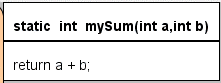 |
MethodHeader:
[MethodModifiers] [TypeParameters] Result MethodDeclarator [Throws]
MethodDeclarator:
Identifier ( [FormalParameterList] )
|
Look and feel:
In menu the Method icon is
A Method block can be in expanded or reduced mode.
Syntax:
The code in an Method block must be: static | main | <MethodHeader>
Comments are not allowed in method header code.
Comment section:
The comment is Exported as Javadoc comment for the method.
JStruct can add infos to this comment.
Analyze:
- WARNING: the variable name must start with a lowcase letter.
- WARNING: the method name must start with a lowcase letter.
- ERROR: not a valid Java identifier.
- ERROR: the method name is duplicated.
- ERROR: the method name is also a variable name.
- ERROR: not a valid name for a parameter.
- ERROR: the method does not return any result.
- ERROR: the method may not return a result.
Sequence (statements)
Certain kinds of expressions may be used as statements by following them with semicolons.
| 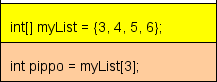 |
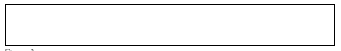 |
StatementExpression:
Assignment
PreIncrementExpression
PreDecrementExpression
PostIncrementExpression
PostDecrementExpression
MethodInvocation
ClassInstanceCreationExpression
BreackExpression
ContinueExpression
|
Look and feel:
The Expression block is a rectangular sequence block.
In menu the Expression block icon is 
Syntax:
The code in an Expression block must be:
<StatementExpression>[; <StatementExpression>] [;]
- Comments in the comment section are grouped as end-of-line comments
(i.e. using '//') see AbstractElemen.PROGRAMDOCONTOP.
- Comments are also allowed in the code section: they are exported in Java code without changes.
Input:
The user defined "Input" keyword (default: "read") is special:
-
read x' (x is a String) is Exported as console input code.
-
x = read("Please input a value") is Exported as pop-up input code.
- The conversion "read" <=> code is reversible in JStruct Import/Export.
- The "Input" keyword can be changed in menu options/parser.
Output:
The user defined "Output" keyword (default: "write") is special:
-
'write x' (x is a String) is Exported as console output code.
-
'write("Result is " + t)' is Exported as pop-up output code.
- The conversion "write" <=> code is reversible in JStruct Import/Export.
- The "Output" keyword can be changed in menu options/parser.
Analyze:
- WARNING: maybe a missing ";" in code.
- ERROR: is not a valid name for a variable.
Sequence (method invocation)
Block specialized for Method Invocation statements (Call).
A method invocation expression is used to invoke a class or instance method.
This block can be used as optional alternative to standard Sequence block.
It is useful to evidence top-down design strategy.
| 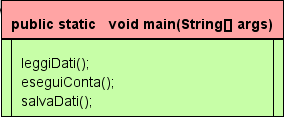 |
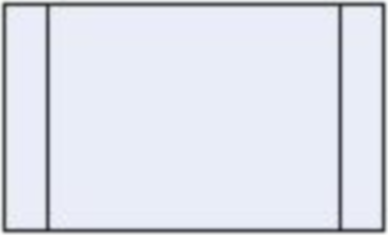 |
MethodInvocation:
MethodName ( [ArgumentList])
Primary .[NonWildTypeArguments] Identifier ( [ArgumentList])
super.[NonWildTypeArguments] Identifier ( [ArgumentList])
ClassName.super. [NonWildTypeArguments] Identifier ( [ArgumentList])
TypeName . [NonWildTypeArguments] Identifier ( [ArgumentList])
ArgumentList:
Expression
ArgumentList , Expression
|
Look and feel:
In menu the Call block icon is
Syntax:
The code in a Call block must be:
<MethodInvocation>[; <MethodInvocation>]]* [;]
- Comments in the comment section are grouped as end-of-line comments
(i.e. using '//') see AbstractElemen.PROGRAMDOCONTOP.
- Comments are NOT allowed in the code section.
Analyze:
- WARNING: the called method do not exist.
(In exported java code a stub is created for missed methods)
Selection (IF)
Alternative block, for if-then-else statement.
The if statement allows conditional execution of a statement or a conditional
choice of two statements, executing one or the other but not both.
| 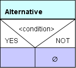 |
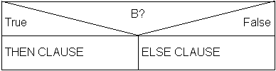 |
IfThenStatement:
if ( Expression ) Statement
IfThenElseStatement:
if ( Expression ) StatementNoShortIf else Statement
IfThenElseStatementNoShortIf:
if ( Expression ) StatementNoShortIf else StatementNoShortIf
|
Look and feel:
The labels "YES", "NOT" and the default code value ("<condition>") can be changed in menu options/parser.
The optional pre-keyword and post-keyword (default "if" and "?") can be changed in menu options/structures.
In menu the Alternative icon is
Syntax:
The code in an Alternative block must be:
[<pre-keyword>] <condition>|(<condition>) [<post-keyword>]
- Comments in the comment section are grouped as end-of-line comments
(i.e. using '//') see AbstractElemen.PROGRAMDOCONTOP.
- Comments are NOT allowed in the code section.
Analyze:- WARNING: empty True-block.
- WARNING: assignment in condition (maybe '=' instead of '==' ?)
Multiple Selection (SWITCH)
Switch block, for switch-case statement.
The switch statement transfers control to one of several statements depending on
the value of an expression
 |
 |
SwitchStatement:
switch ( Expression ) SwitchBlock*
SwitchBlock:
SwitchLabel BlockStatements
SwitchLabel:
case ConstantExpression :
case EnumConstantName :
default :
EnumConstantName:
Identifier
|
Look and feel:
The default code value can be changed in menu options/structures.
In menu the Switch icon is
Syntax:
The code in a Switch block must be a list:
<Expression>|(<Expression>)
<ConstantExpression>|<EnumConstantName>
...
default|%
- Last line must be "%" or "default".
- "%" minds "not default".
- Comments in the comment section are grouped as end-of-line comments
(i.e. using '//') see AbstractElemen.PROGRAMDOCONTOP.
- Comments are NOT allowed in the code section.
Iteration (FOR)
This block implements the for statement.
The basic for statement executes some initialization code,
then executes an Expression, a Statement, and some update
code repeatedly until the value of the Expression is false.
The enhanced for statement has the form:
for ( <FormalParameter> : <Expression> ) <Statement>
| 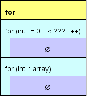 |
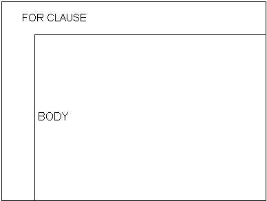 |
BasicForStatement:
for ( [ForInit] ; [Expression] ; [ForUpdate] ) Statement
ForStatementNoShortIf:
for ( [ForInit] ; [Expression] ; [ForUpdate] ) StatementNoShortIf
ForInit:
StatementExpressionList
LocalVariableDeclaration
ForUpdate:
StatementExpressionList
StatementExpressionList:
StatementExpression
StatementExpressionList , StatementExpression
EnhancedForStatement:
for ( FormalParameter : Expression ) Statement
FormalParameter:
VariableModifiersopt Type VariableDeclaratorId
VariableDeclaratorId:
Identifier
VariableDeclaratorId []
|
Look and feel:
The default code value ("for (int i = 0; i < ???; i++)") can be changed in menu options/parser.
The optional pre-keyword and post-keyword (default "for" and "") can be changed in menu options/structures.
In menu the For icon is
Syntax:
The code in a FOR block must be:
[<pre-keyword>] [(]<ForInit>;<Expression>;<ForUpdate>| <FormalParameter>:<Expression> [)] [<post-keyword>]
- Comments in the comment section are grouped as end-of-line comments
(i.e. using '//') see AbstractElemen.PROGRAMDOCONTOP.
- Comments are NOT allowed in the code section.
Iteration (WHILE)
While block, for while-do statement.
The while statement executes an Expression and a Statement repeatedly until the value
of the Expression is false.
| 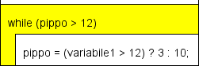 |
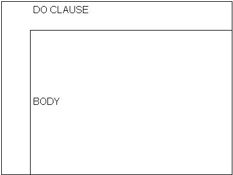 |
WhileStatement:
while ( Expression ) Statement ;
|
Look and feel:
The default code value ("while (<condition>)") can be changed in menu options/parser.
The optional pre-keyword and post-keyword (default "while" and "") can be changed in menu options/structures.
In menu the While block icon is
Syntax:
The code in a while block must be:
[<pre-keyword>] [(]<Expression>[)] [<post-keyword>]
- Comments in the comment section are grouped as end-of-line comments
(i.e. using '//') see AbstractElemen.PROGRAMDOCONTOP.
- Comments are NOT allowed in the code section.
Analyze:
- WARNING: assignment in condition (maybe '=' instead of '==' ?)
Iteration (DO)
Do block, for do-while statement.
The do statement executes a Statement and an Expression repeatedly until the value
of the Expression is false.
| 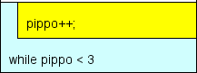 |
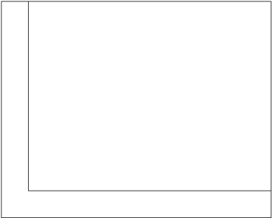 |
DoStatement:
do Statement while ( Expression ) ;
|
Look and feel:
The default code value ("while (<condition>)") can be changed in menu options/parser.
The optional pre-keyword and post-keyword (default "while" and "") can be changed in menu options/structures.
In menu the do block icon is
Syntax:
The code in a do block must be:
[<pre-keyword>] [(]<Condition>[)] [<post-keyword>]
- Comments in the comment section are grouped as end-of-line comments
(i.e. using '//') see AbstractElemen.PROGRAMDOCONTOP.
- Comments are NOT allowed in the code section.
Analyze:
- WARNING: assignment in condition (maybe '=' instead of '==' ?)
try-catch-finally
Try block, for try-catch-finally statement.
A try statement executes a block. If a value is thrown and the try statement has
one or more catch clauses that can catch it, then control will be transferred to the
first such catch clause.
The try-with-resources statement is a try statement that declares one or more resources.
| 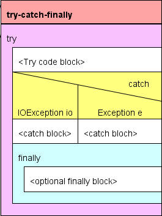 |
|
Catches:
CatchClause
Catches CatchClause
CatchClause:
catch ( CatchFormalParameter ) Block
CatchFormalParameter:
[VariableModifiers] CatchType VariableDeclaratorId
CatchType:
ClassType
ClassType | CatchType
|
Look and feel:
This is a composite block, a try block contains a catch block and a finally block.
In menu the try block icon is
try syntax:
The code section contains only the "try" keyword
- Comments in the comment section are grouped as end-of-line comments
(i.e. using '//') see AbstractElemen.PROGRAMDOCONTOP.
- Comments are NOT allowed in the code section.
try-with-resources syntax:
The code section contains the "try" keyword and resource declarations into "()".
- The resource declarations are Exported "as is": JSruct not mades any control or formatting.
catch syntax:
Designed like the Switch block, this block exists only inside a try block.
The code in a catch block can be the "catch" keyword only or a list: catch
([VariableModifiers] <CatchType> <VariableDeclaratorId>)*
[%]
- A
catch block can also be empty: it acts as placeholder and does not export code.
- Comments are not allowed in
catch code section.
- A
catch block can't be deleted.
finally syntax:
This block exists only inside a try block.
The code in a finally block can be only the "finally" keyword.
- A
finally block can also be empty: it acts as placeholder and does not export code.
- Comments are NOT allowed in the
finally code section.
- A
finally block can't be deleted.
Help |
GUI |
Blocks |
Export |
Import